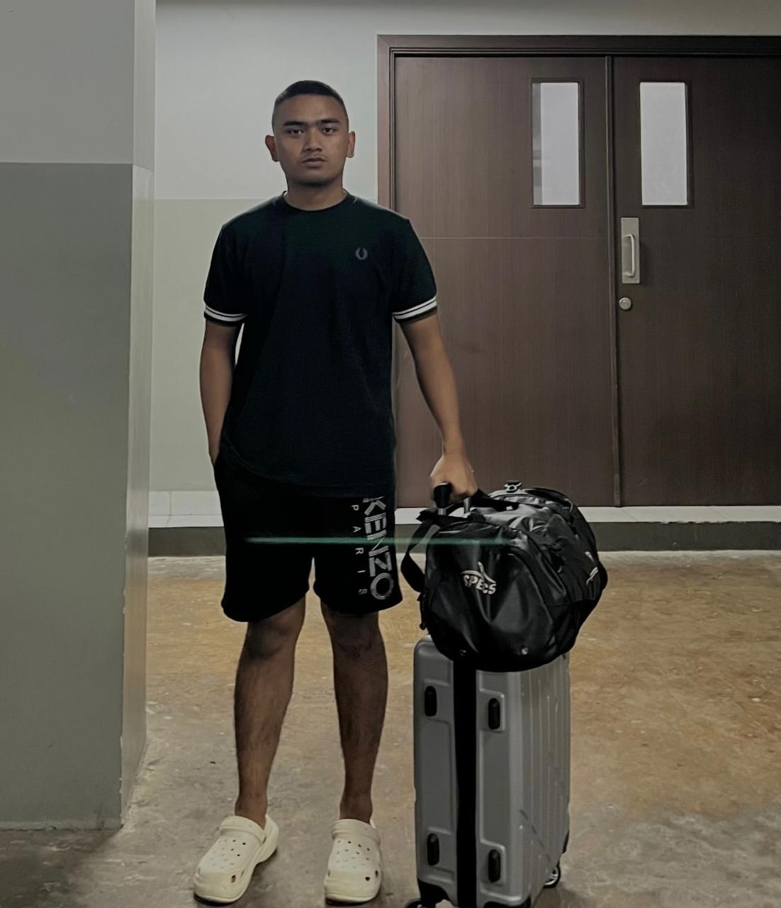

ini merupakan website pertama kali yang saya buat.Sebagai generasi muda tentunya saya sangat tertarik mempelajari dunia CODING, ketika kita melihat jarak antara waktu kedepan, saya sendiri mendapati bahwa betapa pentingnya bisa menggunakan Teknologi terutama dalam pemanfaatannya
I'm Muhammad Al Fauzan,i am student at the Industrial Management Polytechnic under the Ministry of Industry of the Republic Indonesia and I'm excited to write this article to share my future plans for life and education. I want to talk about my aspirations and life plans, as well as what motivates me to pursue them. My journey towards defining and executing these plans has been shaped by a series of experiences and challenges, which have ultimately led me to form a clear vision for my future. Since I was young, I've understood that education is a solid foundation for success in life. With strong determination, I've set some concrete steps to achieve my life goals. First, I'm determined to complete my education with flying colors. I'll put in my best effort to gain the knowledge and skills I need in my field. I believe that discipline and hard work will lead me to success. Second, I aspire to continue my studies to a higher level. I want to choose a major that aligns with my interests and talents, and that can make a positive impact on society. I'm really excited about the possibility of contributing ideas and innovative solutions to tackle real-world challenges and drive positive change. Third, aside from focusing on formal education, I also plan to get involved in social and volunteer activities. I believe that contributing to the community is an important part of my personal development. By doing so, I hope to make a positive impact on my surroundings.
Jangan lupa untuk mengunjungi Instagram Saya Agar kita saling mengenal satu sama lain.